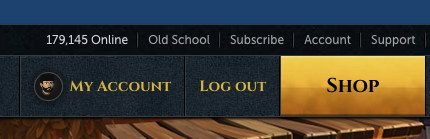
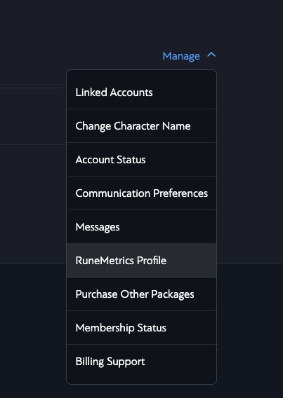
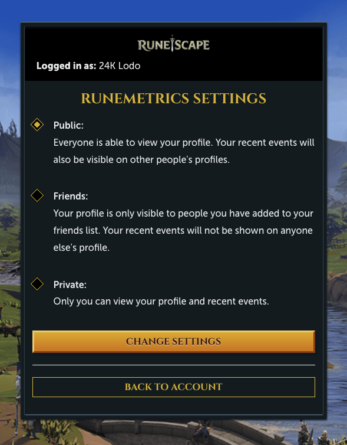
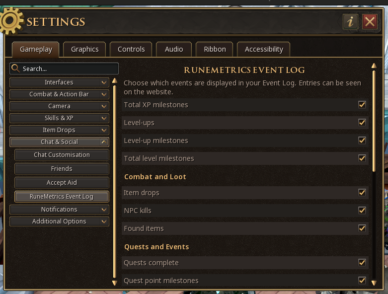

Welcome
If a RuneMetrics Profile is set to private the app is unable to access XP/Activity Data.
This prevents us from knowing if you have visited or capped at the citadel, we cannot track your XP stats,
and are therefore unable to include your profile in any competitions or giveaways that use this date. We respect
your right to have your profile as private if you wish. The guide below shows you how to set your profile to public
and include all the required data in your activity logs.
RuneMetrics Public/Private Profile
- Login to your Jagex account at account.runescape.com
-
Select the Character you wish to edit the profile of:

- Click "My Account" in the top Menu Bar 
- From the Account Management Screen Select the Characters Button.
- On the Character Page for the Character who's profile you wish to change click "Manage" and then select "RuneMetrics Profile" 
- On the RuneMetrics Profile Page, select "Public" and Press "Change Settings" 
RuneMetrics Additional Data
- Run the Jagex Launcher and Login to RuneScape.
- Open Settings > Gameplay > Chat & Social > RuneMetrics Event Log.
- Tick all the boxes under the RuneMetrics Event Log Settings. This will enable all the required logs. 